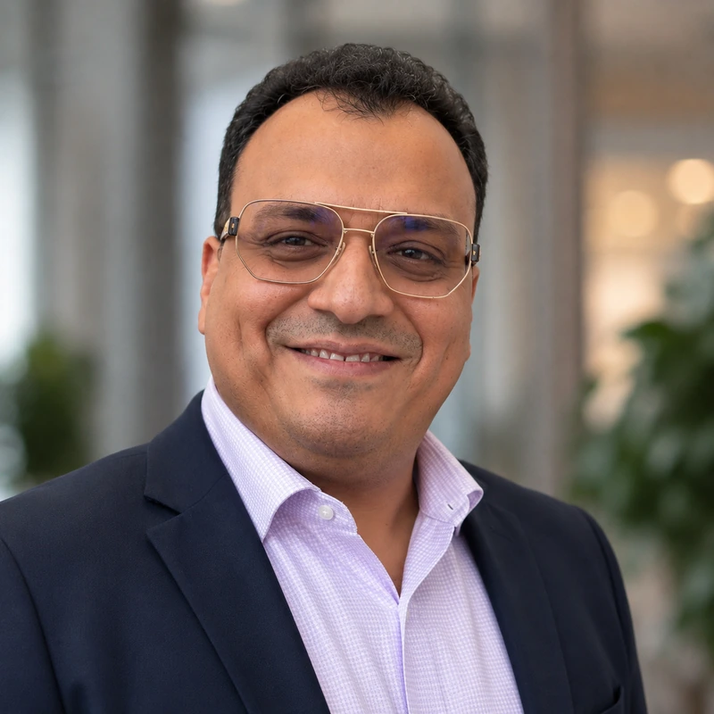
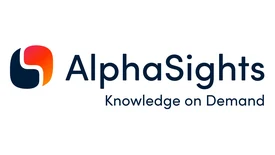
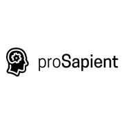
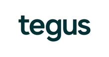
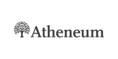
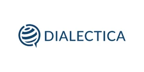
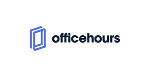

Emerging technology, explained by someone who has delivered it.
I'm an emerging-technologies specialist with an enterprise architecture background and more than 25 years in consulting. I've completed 1,200+ consultations with market-leading expert networks — helping investors, strategy teams, and operators get to a clear answer quickly.

Twenty-five years on the delivery side of enterprise technology.
I've worked globally across industries and sectors with Fortune 100 clients, at firms including Accenture, IBM, Capgemini, and Genpact — evaluating, designing, and delivering transformation solutions for genuinely complex use cases.
That means I can speak to a category from three angles at once: what the technology actually does, how buyers evaluate and procure it, and what happens after the contract is signed. It's a useful vantage point when you're sizing a market, diligencing a vendor, or testing a thesis.
No employer-confidentiality restrictions and no public-company exposure restrictions. I complete every network's compliance training and work strictly within its guidelines.
Trusted by the networks your clients already use.
I'm an active, compliance-cleared expert with 40+ networks worldwide. Those I work with most often:

London
London
Chicago
Berlin
Athens
San Francisco+ 27 further networks worldwide
Formats I take on.
1:1 calls
Phone or video, typically 30–60 minutes, scheduled at short notice.
Due diligence sprints
Focused vendor, market, or technology diligence against a live deal clock.
Long-term advisory
Retained support for teams tracking a category or programme over time.
Moderated panels
Multi-expert sessions where I bring the delivery-side perspective.
Speaking
Conference sessions and executive roundtables on emerging technology.
315 topics across 15 domains.
If a project touches any of these, I can almost certainly help — or tell you honestly that I can't. Open a domain to see the full list.
Have a project that fits? Let's talk.
Coordinators and recruiters — send the brief and I'll confirm fit the same day. I am based out of Dubai (GST) and regularly take calls across US and European hours.
Book a 30-minute slot